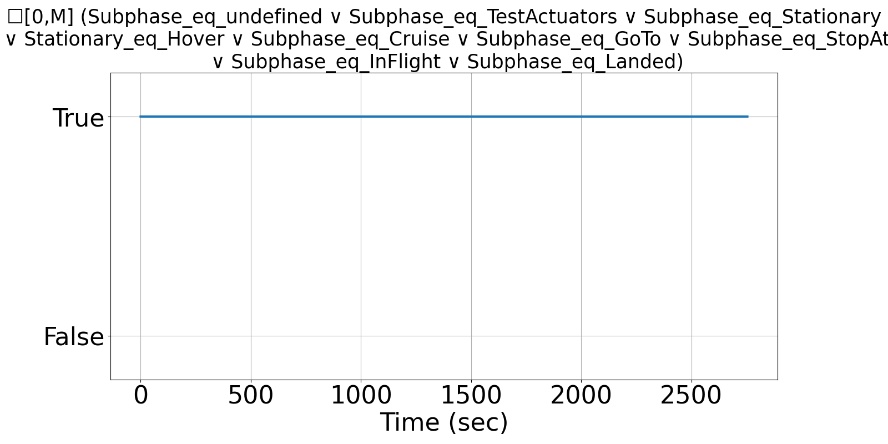
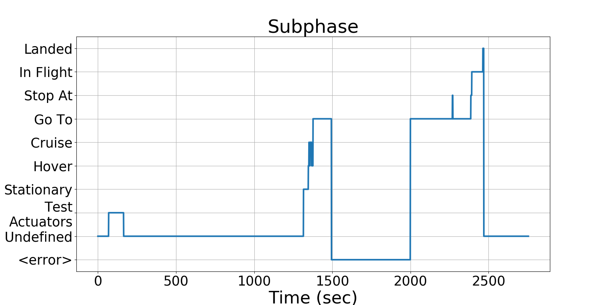
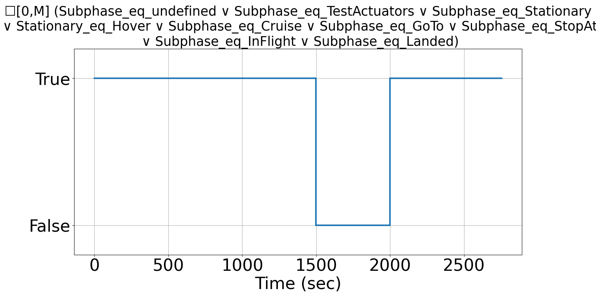

Integrating Runtime Verification into an
Automated UAS Traffic Management System
Matthew Cauwels, Abigail Hammer, Benjamin Hertz, Phillip H. Jones, Kristin Y. Rozier
This webpage contains supplementary specifications for "Integrating Runtime Verification into an
Automated UAS Traffic Management System" by M. Cauwels, A. Hammer, B. Hertz, P. H. Jones, and K. Y. Rozier
SB_UAS_10
Specification Description
The Subphase of the UAS will be limited to the following string at all instances: <undefined>, Test actuators, Stationary, Hover, Cruise, Go to, Stop at, In flight, Landed
Signals Required
Subphase
Boolean Conversion of Signals to Atomic Inputs
Subphase_eq_undefined: Subphase == <undefined>
Subphase_eq_TestActuators: Subphase == Test Actuators
Subphase_eq_Stationary: Subphase == Stationary
Subphase_eq_Hover: Subphase == Hover
Subphase_eq_Cruise: Subphase == Cruise
Subphase_eq_GoTo: Subphase == Go to
Subphase_eq_StopAt: Subphase == Stop at
Subphase_eq_InFlight: Subphase == In flight
Subphase_eq_Landed: Subphase == LandedMLTL Specification
☐[0,M] (Subphase_eq_undefined ∨ Subphase_eq_TestActuators ∨ Subphase_eq_Stationary ∨ Subphase_eq_Hover ∨ Subphase_eq_Cruise ∨ Subphase_eq_GoTo ∨ Subphase_eq_StopAt ∨ Subphase_eq_InFlight ∨ Subphase_eq_Landed)
Fault Explanation
Subphase is not one of predefined strings. Can only be <undefined>, Test Actuators, Stationary, Hover, Cruise, Go to, Stop at, In flight, or Landed.
Additional Notes
Based on all possible states the UAS Subphase can enter
Figures



